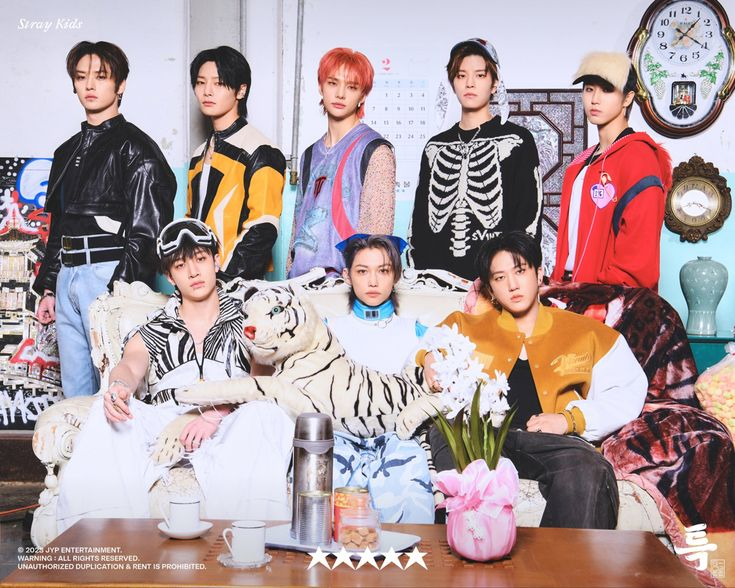
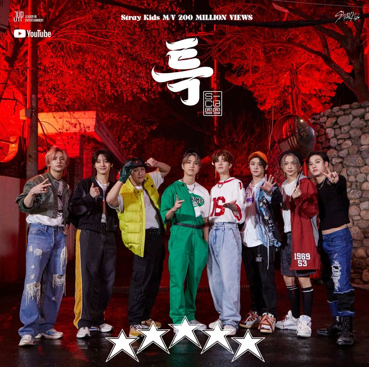

|
 |
El 2 de junio de 2023, Stray Kids lanzó su tercer álbum de larga duración ★★★★★ (5-STAR),
un trabajo que celebra la idea de que cada integrante brilla con luz propia y que, juntos,
forman una constelación imposible de ignorar. El sencillo principal, "S-Class" (특),
refleja la confianza del grupo y su deseo de seguir reinventándose.
El álbum rompió récords de preventa en la historia del K-pop y debutó en el primer puesto del Billboard 200, convirtiéndose en su tercer álbum consecutivo en lograrlo. Meses más tarde, en agosto, recibió la certificación 5x Million por parte de la KMCA, confirmando el enorme alcance de esta era. |
| Periodo | Abril - Junio 2023 |
| Álbum | ★★★★★ (5-STAR) - 2 de junio de 2023 |
| Sencillo principal | "S-Class" (특) |
| Logro destacado | Debut #1 en Billboard 200 y certificación 5x Million (KMCA) |
